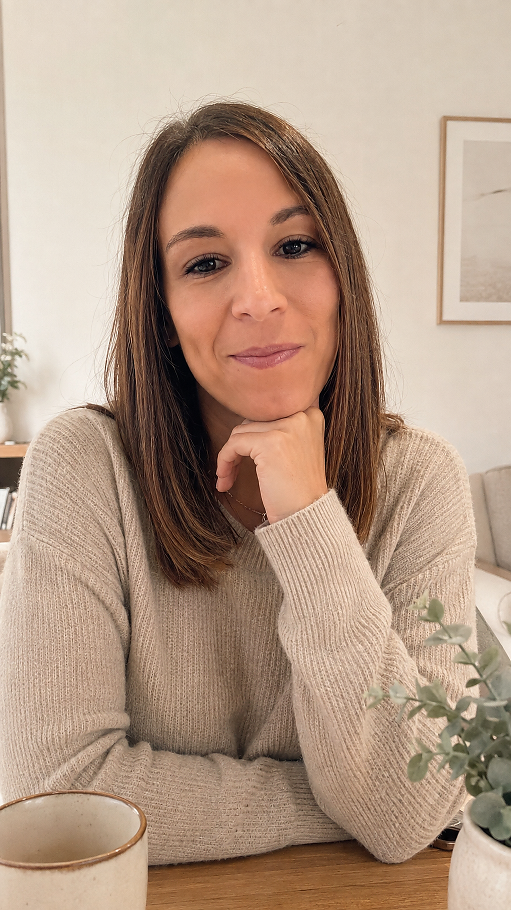

Regulación emocional e impulsividad
Enfado, frustración, reacciones desproporcionadas, culpa tras discutir o dificultad para manejar emociones intensas.
Acompaño online a adolescentes, jóvenes y familias cuando las discusiones, los límites y los conflictos han convertido la convivencia en algo difícil de sostener, sentís que ya habéis probado de todo sin conseguir progresos y necesitáis encontrar herramientas concretas para generar cambios reales y sostenibles.
Adolescentes y jóvenes a partir de 14 años
Enfado, frustración, reacciones desproporcionadas, culpa tras discutir o dificultad para manejar emociones intensas.
Ansiedad, bloqueo, sensación de saturación, dificultad para calmarse o momentos en los que todo se hace cuesta arriba.
Autocrítica, comparaciones constantes, necesidad de aprobación o dificultad para valorarse con más seguridad.
Miedo al rechazo, conflictos con amistades, dificultad para poner límites, dependencia emocional o sensación de no terminar de encajar.
Autoexigencia, ansiedad académica, miedo a decepcionar, bloqueo ante responsabilidades o dificultades de organización.
Discusiones frecuentes, límites, luchas de poder o sensación de que la convivencia en casa se ha vuelto difícil de manejar.
Llevo más de diez años trabajando con adolescentes, jóvenes y familias, gran parte de ese recorrido en el ámbito de la justicia juvenil y en recursos específicos de salud mental infantojuvenil, acompañando situaciones en las que las dificultades personales, familiares y sociales ya han alcanzado un nivel elevado de complejidad.
Esa experiencia me ha permitido conocer de cerca cómo evolucionan muchos problemas durante la adolescencia, qué factores hacen que determinadas dificultades se mantengan o escalen y qué elementos pueden marcar la diferencia cuando se interviene de forma temprana y ajustada a cada caso.
En consulta online, combino una mirada psicológica rigurosa con herramientas concretas y aplicables al día a día. Mi objetivo no es solo reducir el malestar o resolver el conflicto puntual, sino comprender qué está sosteniendo el problema, intervenir sobre ello y ayudar a que las dificultades no sigan escalando.
Trabajo tanto con adolescentes y jóvenes como con sus familias, adaptando el proceso a las necesidades de cada caso y buscando cambios que puedan mantenerse fuera de sesión y trasladarse a la vida cotidiana.
Más de 10 años de experiencia profesional con adolescentes y familias en contextos sanitarios, socioeducativos y de alta complejidad.
Experiencia con dificultades emocionales, impulsividad y gestión de la frustración, autoestima, relaciones sociales, problemas de conducta y dinámicas familiares complejas.
En adolescencia, muchas dificultades no pueden entenderse únicamente desde lo individual. Cuando el caso lo requiere, incorporo a madres y padres para trabajar comunicación, límites y dinámicas de convivencia.
Definimos objetivos claros, trabajamos sobre situaciones concretas e incorporamos herramientas aplicables fuera de sesión, revisando periódicamente los avances.
Una primera conversación breve, sin el adolescente, para conocer qué os preocupa como padres, entender la situación actual y valorar si puedo ayudaros.
Este primer contacto también sirve para identificar cuál es la principal necesidad de intervención y decidir quién o quiénes deberían participar prioritariamente en el proceso.
Recogemos la información relevante, revisamos qué está ocurriendo y empezamos a definir el planteamiento terapéutico y los primeros objetivos de trabajo.
Cuando se trata de adolescentes, la valoración incluye también un espacio propio para ellos. Es importante que sepan que disponen de un espacio de confianza y confidencialidad —con los límites que corresponden— en el que puedan expresarse sin sentir que todo lo que cuentan será trasladado automáticamente a sus padres.
Construir ese vínculo terapéutico es una parte fundamental del proceso.
A partir de la valoración inicial, definimos qué vamos a trabajar, con qué frecuencia y de qué manera. El proceso puede centrarse en el adolescente, en la familia o combinar ambos espacios, en función de las necesidades y objetivos del caso.
También valoramos si existe algún área que necesite una evaluación más específica para comprender mejor determinadas dificultades en el funcionamiento cotidiano del adolescente.
Trabajamos sobre situaciones concretas e incorporamos herramientas que puedan aplicarse fuera de sesión. Revisamos periódicamente los avances y ajustamos los objetivos cuando es necesario.
Cuando la familia forma parte del proceso, se incorporan sesiones familiares u otros espacios de orientación y coordinación siempre que tengan sentido terapéutico.
Aunque el proceso individual pertenece al adolescente, la implicación familiar puede ser un elemento clave para favorecer los avances, generalizarlos al día a día y ayudar a que se mantengan en el tiempo.
Trabajo online con adolescentes, jóvenes y familias de toda España.
Este formato facilita iniciar y mantener el proceso con mayor flexibilidad, sin desplazamientos y desde un entorno conocido.
Solo necesitas un espacio tranquilo, conexión estable y un dispositivo con cámara.
Te responderé personalmente por e-mail en las próximas 24–48 h.
Cuidar de ti y de tu familia también pasa por atender vuestra salud mental.
El formato online permite desarrollar un proceso terapéutico profundo y continuado cuando se adapta bien a la persona y a sus necesidades. En adolescentes y jóvenes, además, trabajar desde un entorno conocido puede favorecer que se sientan más cómodos y que la terapia se integre con mayor facilidad en su rutina.
No se trata de trasladar una sesión presencial a una pantalla sin más. Adapto las sesiones para mantener un trabajo dinámico y participativo: utilizamos materiales visuales, ejercicios, registros, recursos compartidos y tareas entre sesiones cuando pueden ayudar. El objetivo es que lo trabajado no se quede en la videollamada, sino que se traduzca en cambios concretos en el día a día.
Incorporo también el trabajo con madres y padres. En la adolescencia, la familia forma parte del contexto en el que se producen y mantienen muchas de las dificultades, por lo que su participación puede ser fundamental para favorecer cambios estables y generalizar y sostener los avances fuera de sesión.

Sí. De hecho, en adolescencia muchas veces es muy útil comenzar trabajando con los adultos aunque el adolescente todavía no quiera participar. Cambiar la forma de comunicaros, revisar cómo se están poniendo los límites, reducir las escaladas de conflicto o entender mejor qué está manteniendo determinadas conductas puede producir cambios importantes en casa.
Este primer trabajo con la familia también puede ayudar a crear un contexto más favorable para que el adolescente se sienta menos señalado y más dispuesto a implicarse. Además, cuando percibe que la terapia no consiste únicamente en «cambiarle a él», sino en ayudar a toda la familia a relacionarse de otra manera, suele ser más fácil plantear su incorporación al proceso si posteriormente resulta conveniente.
Sí, puede ser un formato muy adecuado para adolescentes y jóvenes. La eficacia del proceso no depende únicamente de estar físicamente en la misma habitación, sino de factores como la alianza terapéutica, la implicación, la continuidad y que la intervención esté bien adaptada a la persona. En consulta online utilizo recursos visuales, ejercicios, materiales compartidos y herramientas prácticas para favorecer una participación activa.
Para que el trabajo sea cómodo y realmente útil, también es importante cuidar algunas condiciones básicas del entorno. Valoro que exista suficiente privacidad y unas condiciones mínimas para poder trabajar con tranquilidad. En la primera toma de contacto revisamos vuestro caso y vemos si este formato encaja bien.
Mi especialización principal es la adolescencia y la juventud, pero el trabajo con madres, padres y familias ocupa una parte muy importante de mi práctica profesional. Muchas dificultades adolescentes no pueden entenderse de forma aislada del contexto familiar: la comunicación, los límites, las respuestas ante el conflicto o la manera en que cada miembro reacciona pueden influir mucho en la evolución.
Por eso, según los objetivos del proceso, puedo trabajar con el adolescente, contigo como madre o padre, o combinar ambos espacios, ya que la implicación familiar es, en muchos casos, un elemento decisivo para que los cambios se mantengan.
No es necesario esperar a que el problema sea extremo. Suele ser buen momento para pedir una valoración cuando los conflictos se repiten y cada vez cuesta más resolverlos, cuando la comunicación se ha deteriorado, aparecen cambios emocionales o conductuales que preocupan, o cuando como madre o padre sientes que has probado muchas cosas y ya no sabes cómo actuar.
Pedir ayuda no implica necesariamente iniciar un proceso largo: a veces una primera valoración ya permite poner orden y orientar mejor los siguientes pasos. La primera valoración sirve precisamente para entender qué está ocurriendo, qué factores pueden estar influyendo y decidir si es necesario iniciar un proceso terapéutico o si bastan unas pautas más concretas.
Escríbeme por WhatsApp y cuéntame brevemente qué os preocupa. Te responderé para valorar juntos cuál puede ser el siguiente paso.